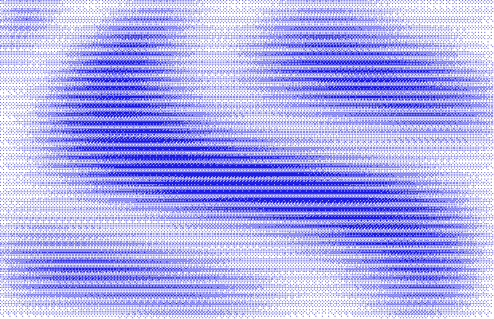

Computed each business day from five public FRED series. 0 is the loosest credit conditions on the reference scale, 100 the tightest. Every published value is reproducible by hand from FRED and the methodology, and values are never revised — a correction is a new observation under a new version, never an edit to an old one. APCCI measures conditions, not returns. It is not a forecast, not investment advice, and carries no performance claim.
Verification steps appear once a value is published.
Five public FRED series, fixed weights, piecewise-linear anchors and rounding specified to the decimal place. Nothing is proprietary and nothing is hidden behind a model.

A published value is final. The store refuses UPDATE and DELETE outright, so a number that has been cited cannot quietly become a different number later.
Any change to inputs, weights or anchors creates a new version alongside the old one. Corrections are new observations, never edits, and every version stays live forever.
CSV columns: ticker, version, obs_date, value, band. The JSON additionally carries the full component breakdown for every observation, so the arithmetic above can be checked for any past date, not just today.
| Version | Status | Observations | First | Last |
|---|---|---|---|---|
| 1.1.0empirical percentiles of full FRED history | pending_calibration | 0 | — | — |
| 1.0.0named historical episodes and approximate medians | published | 0 | — | — |
A change to inputs, weights or anchors creates a new version. Existing versions are never recomputed, so a citation naming a version and a date always resolves to the same number.
The full specification — inputs, staleness and plausibility gates, anchor tables for every version, the v1.1.0 calibration procedure and the revision policy — is in APCCI_METHODOLOGY.md.
AP Credit Cycle Index (APCCI), version 1.1.0, observation YYYY-MM-DD. Retrieved from apcci-1.1.0.csv. Methodology: APCCI_METHODOLOGY.md.